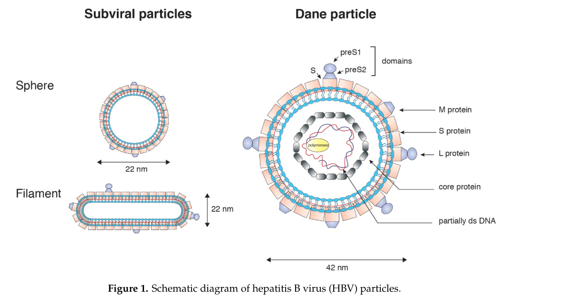
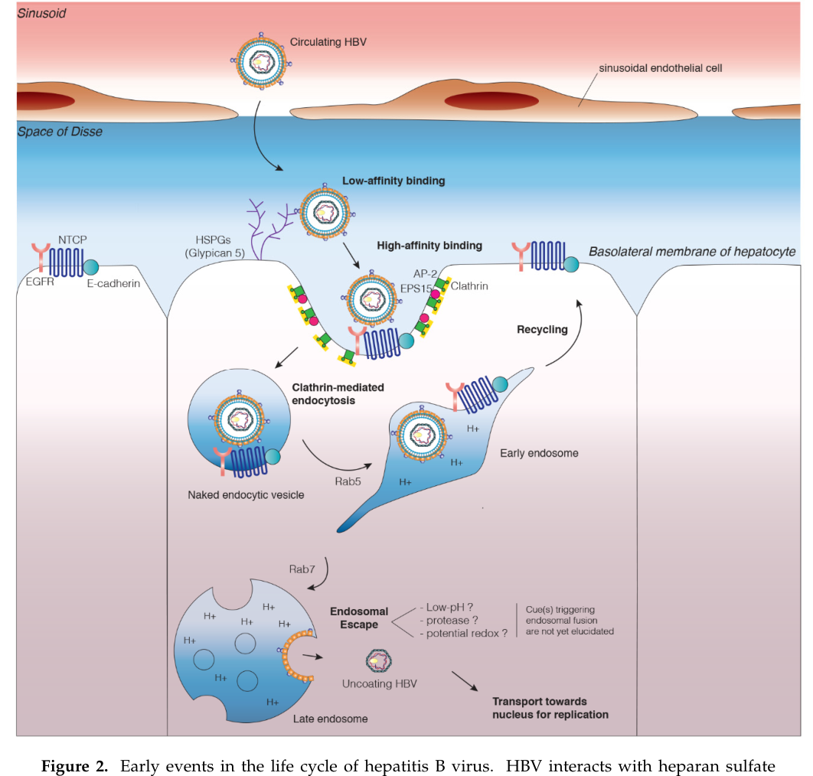

乙肝疫苗深度学习计划 · 阶段一报告
流行病学、病毒学与致病机制
编制：Claw ｜ 2026-08-23 ｜ 供内部学习交流
本报告是乙肝疫苗四阶段学习计划的第一阶段，聚焦三个根基问题：乙肝的疾病负担有多重？病毒靠什么机制在人体内顽固存续（cccDNA）？为什么同一个病毒，成人感染大多自愈、而母婴传播者九成以上慢性化？这三个问题的答案共同指向：预防性疫苗为何成功、治疗性疫苗为何艰难。全文关键数据均标注文献来源（PMID），示意图取自原文并注明出处。
根据Polaris Observatory协作组对170个国家建模的权威估计（Lancet Gastroenterol Hepatol 2023）：2022年全球HBsAg阳性率3.2%（95%UI 2.7–4.0），对应约2.575亿感染者（2.17–3.16亿），非洲区与西太平洋区占绝对多数。
关键数字：
· 感染：257.5百万人（3.2%）
· 诊断：仅36.0百万人（约14%）知晓感染
· 治疗：83.3百万人符合治疗条件，但仅6.8百万人在治（约8%）
· 5岁及以下儿童感染率0.7%（5.6百万）——疫苗时代出生队列的残余感染
· 疫苗覆盖：85%婴儿在1岁前完成三针接种；仅46%出生后及时接种首剂（timely birth dose）；14%的HBsAg阳性母亲所生婴儿获得乙肝免疫球蛋白联合免疫
[1] Polaris Observatory Collaborators. Lancet Gastroenterol Hepatol. 2023;8(10):879-907. PMID 37517414
从“感染→诊断→治疗→病毒抑制”的级联（cascade of care）看，86%的感染者未被诊断，是2030年WHO消除目标（较2016基线新发感染降90%、死亡降65%）的最大断点。这也是治疗性疫苗未来的真实市场画布：存量感染者巨大，但可及人群取决于筛查。
中国的地位：从高流行国家降至儿童低流行（1992年纳入计划免疫管理、2005年实现免费接种、2009-2011补种），但成人存量感染者仍以千万计（Polaris分国别数据见原文图表）。
① 预防性疫苗高覆盖已使新发感染大幅下降，但出生剂量及时率（全球46%）仍是缺口——围产期窗口恰恰是慢性化的主源头；② 存量感染者中的巨大治疗缺口，构成治疗性疫苗的公共卫生价值；③ 消除目标无法靠现有核苷（酸）类似物（NUC）单独实现（停药复发率高），为功能性治愈手段（含治疗性疫苗）留下明确生态位。
HBV属嗜肝DNA病毒科（Hepadnaviridae），血液中存在三种颗粒：
· Dane颗粒（42 nm）：唯一完整感染性颗粒，外层脂质包膜镶嵌L/M/S三种包膜蛋白，内含HBc核衣壳，核心包裹部分双链松弛环状DNA（rcDNA）与聚合酶；
· 球形亚病毒颗粒（22 nm）：仅含包膜蛋白的空壳，数量为Dane颗粒的1000-100万倍，是血清HBsAg的主要来源；
· 丝状亚病毒颗粒：同为空壳。
包膜蛋白共享C端S域，N端延伸不同：S蛋白（小表面抗原，传统疫苗抗原）、M蛋白（preS2+S）、L蛋白（preS1+preS2+S）。preS1的2-48氨基酸区是结合肝细胞受体NTCP的关键配体——也是新一代疫苗抗原设计（阶段二、四）的焦点。

图1 HBV颗粒结构示意（Herrscher C, et al. Cells. 2020;9(6):1486. PMID 32570893, Figure 1）
基因组3.2 kb rcDNA：正链不完整、负链带gap且5'端共价连接聚合酶末端蛋白。四个重叠ORF：
· P：聚合酶（末端蛋白TP+间隔区+逆转录酶+RNaseH）——TP是负链合成引物；
· S：三个起始密码子产出L/M/S包膜蛋白；
· C：HBc（衣壳）与HBeAg（preC起始，经信号肽切割分泌，免疫耐受调节因子）；
· X：HBx，cccDNA转录反式激活因子（降解Smc5/6解除宿主沉默），与HCC相关。
HBV嗜肝性的分子基础是胆酸转运体NTCP（SLC10A1）。L蛋白preS1域（myristoylated 2-48 aa基序）识别NTCP并介导内吞。入胞抑制剂布勒威肽（bulevirtide/Myrcludex-B，preS1模拟肽）即基于此机制获批用于HBV/HDV感染。

图2 HBV入胞机制（同上，Figure 2）
HBV复制的独特性在于以RNA为中间体（“DNA病毒用RNA复制”）：
① Dane颗粒内吞脱衣壳 → ② 核衣壳入核 → ③ rcDNA修复为共价闭合环状DNA（cccDNA）→ ④ cccDNA作为微染色体转录pgRNA（3.5 kb）与亚基因组mRNA（2.4/2.1/0.7 kb）→ ⑤ pgRNA与P蛋白装配衣壳 → ⑥ 逆转录合成负链、部分正链 → ⑦ 部分核衣壳回归细胞核扩充cccDNA池（胞内扩增），部分经内质网出芽获得包膜分泌。
关键点：cccDNA不是半保留复制的产物，而是每条rcDNA入核后经宿主修复机器完成——理解这一点，就理解了为何NUC（抑制逆转录）只能压制rcDNA生成、动不了已建立的cccDNA库。
[2] Seeger C, Mason WS. Virology. 2015;479-480:492-503. PMID 25759099（嗜肝病毒分子生物学经典综述）
rcDNA入核后切除聚合酶、补齐正链、连接缺口成环——依赖宿主DNA修复系统（NHEJ与碱基切除修复组分参与）。cccDNA以微染色体形式存在：与组蛋白H3/H4结合，携带活跃表观修饰（H3K4me3、H3K27ac标志活跃转录；H3K9me3/H3K27me3与沉默相关），每个感染肝细胞核内约5-50拷贝。
cccDNA池维持的三特征：① 半衰期长（土拨鼠模型估计33-57天；人肝估计更长），NUC治疗下保持稳定；② 不因肝细胞分裂而稀释（可随子代分配+胞内扩增补充）；③ 可被表观沉默但极少被主动降解（APOBEC3A/B有降解cccDNA的报告，生理意义有限）。
整合DNA（integrated DNA）：高达90%慢性感染者肝细胞存在HBV DNA随机整合（感染早期即可发生），整合片段多缺失完整ORF但可持续表达HBsAg（截短S读框），成为血清HBsAg的重要来源——这就是为何即使cccDNA被深度抑制，HBsAg清除仍难实现。整合同时是肝细胞癌（HCC）的主要驱动（插入突变+基因组不稳定）。
三层调控：① 病毒层面——HBx招募CBP/p300等乙酰化酶并降解Smc5/6复合物（后者本是沉默cccDNA的宿主限制因子）；② 宿主层面——肝富集转录因子（HNF4α、FXR、RXR、LRH-1等）驱动核心启动子；③ 表观层面——微染色体组蛋白修饰状态决定转录通量。IFN-α治疗可使部分患者cccDNA表观失活（转录沉默）——功能性治愈的一条潜在途径。
现有药物无一能直接清除cccDNA：NUC阻断逆转录，PEG-IFN兼具免疫调节与表观压制。因此治愈退而求其次为“功能性治愈”：停药后HBsAg持续阴转（<0.05 IU/mL）+HBV DNA检测不到+ALT正常——cccDNA与整合DNA可能仍存在，但肝癌风险显著下降。cccDNA的不可清除性，正是治疗性疫苗被寄予厚望的根本原因：药物清不掉的，只能指望免疫系统长期控制。
围产期/婴幼儿感染：90%以上慢性化；成人急性感染：95%以上自愈。核心免疫学：
· 成人自愈：强而广的多克隆CD4+ Th1应答 + 多特异性CD8+ T细胞（覆盖core/polymerase/env表位）+ 早期中和抗体（抗-HBs）清除循环病毒 + 稳固的记忆生成。
· 围产期慢性化：HBeAg（可溶性）经胎盘与母乳持续暴露，被胎儿免疫系统当作“自我”——胸腺克隆删除HBeAg/HBcAg特异性T细胞（中央耐受）；出生后高抗原载量持续驱动外周耗竭：①病毒特异性CD8+T细胞耗竭（PD-1/TIM-3上调、效应功能递减）；②Treg扩增与IL-10/TGF-β免疫抑制微环境；③髓系功能障碍（Kupffer细胞PD-L1上调、MDSC聚集、DC提呈受损）；④中和抗体应答缺失（抗-HBs阴性）。
[3] Zheng JR, Wang ZL, Feng B. Front Immunol. 2022;13:1035014. PMID 36466821
[4] Zheng P, et al. Front Cell Infect Microbiol. 2023;13:1206720. PMID 37424786
慢性HBV的CD8+T耗竭是异质谱系而非单一状态：
· 终末耗竭（terminally exhausted，TOXhi）：细胞毒性低、转录僵化、增殖能力差；
· 干细胞样耗竭祖细胞（TCF-1+PD-1+）：保留自我更新能力，是PD-1抗体再激活的目标群体；
· 肝窦滞留：肝内CXCR6+CD8+T细胞困于肝窦、经历慢性TCR刺激。
CD4+T辅助衰竭在HBV尤为突出：Tfh功能不足导致抗-HBs类别转换失败——这正是治疗性疫苗需要重建的关键环节（核心使命：在高抗原耐受环境下重建Tfh→B细胞轴与有效CD8+应答）。
传统四期：免疫耐受期（IT）→ 免疫清除期（IC）→ 低复制期（HBeAg血清转换）→ 再激活期（HBeAg-CHB）。EASL 2017起转向以HBsAg定量+DNA+ALT为核心的HBeAg+/HBeAg-慢性肝炎二分法，因为“免疫耐受期”并非完全耐受（存在亚临床肝炎）——此争议直接影响IT期人群是否纳入治疗性疫苗试验（历史上多数试验排除IT期）。
[5] Tseng TC, Kao JH. J Viral Hepat. 2015;22(12):951-6. PMID 25424771
① 耐受环境要求强免疫原性（新佐剂/载体），且常需联合免疫检查点或免疫调节剂；② 治疗性疫苗的应答读出不仅是抗体——CD4/CD8重建与HBsAg下降动力学是核心终点；③ 抗原选择需覆盖preS1/preS2（打破仅S抗原的耐受格局、避开整合来源截短S的免疫优势表位干扰）。
[6] Wong GLH, Gane E, Lok ASF. J Hepatol. 2022;76(6):1249-1262. PMID 35589248
1. 全球2.575亿感染者、诊断率14%、治疗率8%——治疗性疫苗有巨大未满足需求，但市场转化取决于筛查诊断体系。
2. HBV以cccDNA微染色体形式在肝细胞核持久存续，现有药物无法清除；整合DNA持续分泌HBsAg并驱动HCC。
3. 成人自愈靠广谱T细胞+中和抗体；母婴慢性化源于HBeAg诱导的中央耐受+外周耗竭双重打击。
4. 治疗性疫苗的本质使命：在高抗原、耐受主导的肝脏微环境中重建Tfh-B轴与多特异性CD8+应答，实现停药后HBsAg持续阴转（功能性治愈）。
5. 阶段二将进入疫苗技术全景：预防性疫苗技术演进（重组蛋白→CpG→saRNA/腺病毒载体）与治疗性疫苗全球管线（TherVacB等）。
[1] Polaris Observatory Collaborators. Global prevalence, cascade of care, and prophylaxis coverage of hepatitis B in 2022: a modelling study. Lancet Gastroenterol Hepatol. 2023;8(10):879-907. PMID 37517414
[2] Seeger C, Mason WS. Hepadnaviruses, reverse transcription and the pathogenesis of hepatocellular carcinoma. Virology. 2015;479-480:492-503. PMID 25759099
[3] Herrscher C, Roingeard P, Blanchard E. Hepatitis B Virus Entry into Cells. Cells. 2020;9(6):1486. PMID 32570893
[4] Boonstra A, Sari G. HBV cccDNA: The Molecular Reservoir of Hepatitis B Persistence and Challenges to Achieve Viral Eradication. Biomolecules. 2025;15(1):62. PMID 39858456
[5] Pollicino T, et al. HBV-Integration Studies in the Clinic: Role in the Natural History of Infection. Viruses. 2021;13(3):368. PMID 33652619
[6] Zheng JR, Wang ZL, Feng B. Hepatitis B functional cure and immune response. Front Immunol. 2022;13:1035014. PMID 36466821
[7] Zheng P, et al. Immune response and treatment targets of chronic hepatitis B virus infection: innate and adaptive immunity. Front Cell Infect Microbiol. 2023;13:1206720. PMID 37424786
[8] Tseng TC, Kao JH. Treatment of immune-tolerant hepatitis B. J Viral Hepat. 2015;22(12):951-6. PMID 25424771
[9] Wong GLH, Gane E, Lok ASF. How to achieve functional cure of HBV. J Hepatol. 2022;76(6):1249-1262. PMID 35589248
调研问题：文献中是否存在用酶（或酶学机制）直接降解乙肝包膜蛋白S/preS2/preS1的治疗策略？
检索范围：PubMed（protease/enzyme/degradation/PROTAC/LYTAC/glucosidase × HBV/HBsAg），截至2026-08-23。
6.1 直接答案：外源酶直接降解S蛋白的治疗策略——文献空白
未检索到任何将蛋白酶（或其它降解酶）作为药物、直接降解循环HBsAg或细胞内L/M/S包膜蛋白的临床或临床前治疗研究。历史上的蛋白酶相关HBsAg文献（1980s-2000s）属于基础病毒学（蛋白酶敏感性作图、表位暴露研究），非治疗策略。这个空白本身就是重要信息——见6.4机会点分析。
6.2 相邻路线一：α-葡萄糖苷酶抑制剂（抑制宿主酶→S蛋白错误折叠→ER滞留降解）——经典且进过临床
机制：S蛋白在内质网进行N-连接糖基化，其正确折叠依赖于宿主ER α-葡萄糖苷酶I/II对N-聚糖的逐步修剪。竞争性抑制这两种酶（如castanospermine衍生物、NB-DNJ/Miglustat、celgosivir）会使S蛋白糖基化处理停滞、错误折叠，滞留ER并被ERAD（内质网相关蛋白降解，泛素-蛋白酶体系统执行）清除，从而大幅减少HBsAg与Dane颗粒分泌——因为所有HBV颗粒的出芽都依赖正确折叠的包膜蛋白通过ER质量控制系统。
证据：这是Block TM与Zitzmann N团队（Oxford/Blumberg研究所）1994-2007年系统工作；NB-DNJ（Miglustat）曾进入慢性乙肝II期临床（降HBsAg但剂量与胃肠毒性受限）；2003年复旦闻玉梅团队综述将其列为抗HBV新靶点之一。该策略证明了“操控宿主酶系统清除S蛋白”的可行性，但因宿主糖苷酶的广谱生理功能，选择性窗口是软肋。
[10] Mehta A, Zitzmann N, et al. Alpha-glucosidase inhibitors as potential broad based anti-viral agents. FEBS Lett. 1998;430(1-2):17-25. PMID 9678587
[11] Wen YM, Lin X, Ma ZM. Exploiting new potential targets for anti-hepatitis B virus drugs. Curr Drug Targets Infect Disord. 2003;3(3):241-6. PMID 14529356
6.3 相邻路线二：靶向蛋白降解（TPD/PROTAC）——2024-2026年新兴热点，但S蛋白仍是无人区
① PROTAC降解宿主因子PAPD5/7（2024）：Block团队将罗氏RG7834（DHQ类PAPD5/7抑制剂，已知降HBsAg）改造为PROTAC分子12b——招募E3连接酶（CRBN配体）将PAPD5送入蛋白酶体降解，从RNA稳定性源头降低HBsAg与HBV mRNA（体外活性10-20 μM级）。这是首个“PROTAC抑制HAV+HBV”的小分子实例，证明了路线可行性。注意：它降解的是宿主聚腺苷酸化酶，不是S蛋白本身。
[12] Li Y, ..., Block T, Du Y. PROTAC modified dihydroquinolizinones (DHQs) that cause degradation of PAPD5 and inhibition of hepatitis A and hepatitis B virus, in vitro. Bioorg Med Chem Lett. 2024;102:129680. PMID 38428537
② 泛素-蛋白酶体系统（UPS）全景综述（2025）：HBx通过劫持宿主E3连接酶重塑泛素化网络；宿主则以泛素链标记病毒抗原促其降解。综述系统评估了蛋白酶体抑制剂、DUB拮抗剂与PROTAC作为HBV治疗的方向——为“工程化降解病毒蛋白”提供了理论框架，但尚无针对S蛋白的分子。
[13] Han J, Kim KH, Seo SU. The Ubiquitin-Proteasome System in Hepatitis B Virus Infection and Hepatocarcinogenesis. J Microbiol Biotechnol. 2025;35:e2508005. PMID 41162171
③ HBc降解剂HyT-S7（2025）：疏水标签降解剂（Hydrophobic Tagging degrader）诱导核心蛋白HBc降解，可绕过衣壳组装调节剂（CAM）的耐药突变——HBV蛋白降解领域目前最接近临床转化的实例，但靶点是HBc而非S蛋白。
[14] Wang M, et al. Conquering viral drug resistance. Pharm Sci Adv. 2025;3:100094. PMID 41550658
6.4 机会点分析：S/preS蛋白降解为什么是空白，以及差异化切入点
为什么空白：① S蛋白以三种形式存在（Dane颗粒包膜/亚病毒颗粒/整合DNA表达），细胞内定位（ER膜）与细胞外（血液10³-10⁶倍过量的空壳颗粒）双重分布，单一降解机制难以覆盖；② 传统PROTAC只降解胞内蛋白，够不到循环中的SVP；③ S蛋白四跨膜 topology 使连接酶招募困难。
三条可行的新思路（供阶段四深化）：
思路A · LYTAC/ATAC降解循环HBsAg：溶酶体靶向嵌合体（LYTAC，CI-M6PR或ASGPR配体偶联anti-HBs抗体）恰好擅长降解分泌蛋白和膜蛋白——将血液中过量SVP递送至溶酶体降解，直接压低血清HBsAg、解除免疫耐受的抗原淹没。检索确认：LYTAC×HBV文献为零（截至检索日），且肝脏ASGPR靶向与我们GalNAc递送平台天然契合——差异化机会显著。
思路B · ASGPR-LYTAC双特异性分子“肝内清扫”：以ASGPR配体+anti-preS1/preS2抗体的双功能分子，同时清除循环SVP与肝细胞表面L蛋白，配合治疗性疫苗“先减淹没、再重建免疫”的序贯逻辑。
思路C · 抗体-酶偶联物（ADE/ATE）：将preS1特异性抗体与工程化蛋白酶偶联（类似 Antibody-Directed Enzyme Prodrug Therapy 反向应用），循环中定点切割S蛋白关键表位使其被肝脏清道夫受体清除——技术门槛高（免疫原性、蛋白酶安全性），但可申请方法学专利布局。
结论：酶学降解S-preS2-preS1在文献中确属空白；现有最接近的证据链（糖苷酶抑制剂→ERAD、PROTAC-PAPD5、HBc-HyT）证明“操控降解机器压制HBV蛋白”完全可行。LYTAC路线与核酸递送平台的协同性最强，值得优先深入研究。
调研问题：是否存在（或工程化开发）能切割/降解cccDNA的酶学治疗策略？
直接答案：有——而且是功能性治愈领域皇冠上的明珠。两条路线：宿主脱氨酶（APOBEC3）与工程化核酸内切酶（CRISPR/TALEN/ZFN）。但截至目前无一进入临床，障碍见7.3。
7.1 路线A：胞嘧啶脱氨酶APOBEC3A/3B——宿主自带的“cccDNA编辑致死”系统
机制：APOBEC3A/3B将cccDNA上的胞嘧啶脱氨为尿嘧啶（C→U），产生U:G错配；宿主碱基切除修复（BER）随后介入——尿嘧啶-DNA糖苷酶（UNG）切除U碱基，AP内切酶在糖-磷酸骨架上切口，产生无碱基位点与缺口；cccDNA是闭环小染色体，多个缺口导致其崩解降解——等于借宿主修复酶系统“从内部瓦解”cccDNA，而不是像限制酶那样识别切割。
里程碑证据（Landmark）：Lucifora等2014年在Science证明，IFN-α与LTβR（淋巴毒素β受体）激活可上调肝细胞APOBEC3A/3B，在离体人原代肝细胞与小鼠模型中特异性降解核内cccDNA，且对肝细胞无毒性、不损伤宿主基因组——首次证明cccDNA可被定向清除。
[15] Lucifora J, Xia Y, Reisinger F, Zhang K, Stadler D, Cheng X, Sprinzl MF, Koppensteiner H, Makowska Z, Novello T, Magni M, Boni S, Sovinz P, Heikenwalder M, Protzer U. Specific and nonhepatotoxic degradation of nuclear hepatitis B virus cccDNA. Science. 2014;343(6176):1221-8. PMID 24557838
后续验证与深化：Xia/Protzer团队在人源化肝脏小鼠与患者来源肝细胞中复现（Gastroenterology 2016, PMID 26416327）；Stadler等2021年对APOBEC3家族的cccDNA降解条件、脱氨依赖与非依赖机制做了系统拆解（EMBO Rep, PMID 33969602）。争议点：生理状态（无IFN刺激）下APOBEC3的内源性活性是否足以清除cccDNA仍不确定——这也解释了为何慢性感染自然清除率极低。
7.2 路线B：工程化序列特异性核酸酶——CRISPR/Cas9领衔的“直接切割”路线
思路：设计sgRNA靶向cccDNA保守区（如S区/X区），Cas9在cccDNA上产生双链断裂；环状DNA一旦线性化即被核核酸外切酶降解，同时突变破坏cccDNA模板功能。2015年起CRISPR×HBV cccDNA文献已逾百篇（本次检索命中118篇），技术变体包括：
· 多sgRNA联用（防逃逸突变，同时打ORF多个位点）；
· TALEN与锌指核酸酶（ZFN）——早于CRISPR的原代方案；
· 碱基编辑器（base editor）——不产生双链断裂，直接在cccDNA上引入C→T终止密码，规避DSB修复重新环化风险；也有报告显示编辑酶自身即可致cccDNA降解。
[16] Kennedy EM, Kornepati AVR, Cullen BR. Targeting hepatitis B virus cccDNA using CRISPR/Cas9. Antiviral Res. 2015;123:188-192. PMID 26476375
[17] Peng C, Lu M, Yang D. CRISPR/Cas9-based tools for targeted genome editing and replication control of HBV. Virol Sin. 2015;30(5):317-325. PMID 26511989
7.3 为什么至今没有成药（关键瓶颈）
① 递送效率的数学困境：cccDNA每细胞仅5-50拷贝、藏于核内微染色体，必须让足够高比例的感染肝细胞（数以十亿计）同时获得编辑酶——对体内递送效率的要求远高于常规基因治疗；
② 脱靶与整合DNA风险：sgRNA对整合型HBV DNA（与cccDNA同源）的切割可能造成宿主基因组DSB——这正是HBV整合高发的肝脏，致癌风险需极致评估；碱基编辑器可部分规避DSB但仍需脱氨脱靶排查；
③ DSB悖论：Cas9切口可能被宿主修复系统重新连接/环化，形成“编辑-再环化”循环；
④ APOBEC3路线的生理强度不足：IFN-α临床剂量下能否达到Lucifora实验中的APOBEC3诱导水平存疑，且长期IFN副作用限制应用；工程化过表达APOBEC3又有宿主基因组诱变风险（脱氨酶本身就是致癌嫌疑酶类）。
7.4 与本司平台的交叉点（阶段四储备）
① mRNA-LNP递送正是体内编辑酶（Cas9/碱基编辑器）的主流递送方案——本报告的LNP平台+肝靶向积累与该路线直接匹配；
② 相比“酶降解S蛋白”（第六章，纯空白），“酶清除cccDNA”是验证充分但递送未解的热点——竞争密度高，差异化须靠递送效率与编辑器选择（如小编辑器SaCas9/mini编辑器适配LNP载量）；
③ 组合逻辑：先siRNA/ASO压低抗原载量→LNP-mRNA编辑酶清库→治疗性疫苗重建免疫监视——三段式功能性治愈路径，各环节与公司管线（核酸+疫苗）全部内洽。
文献计量：APOBEC3×cccDNA共12篇；CRISPR×cccDNA 118篇（PubMed，检索日2026-08-23）。